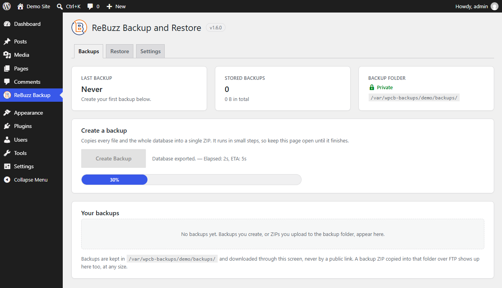
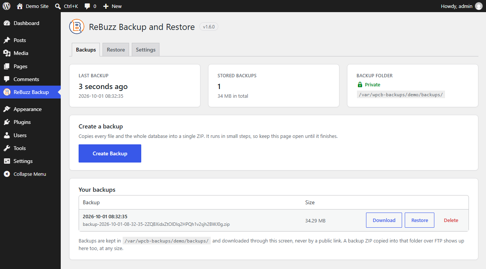
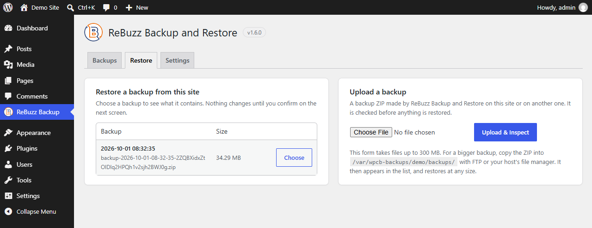
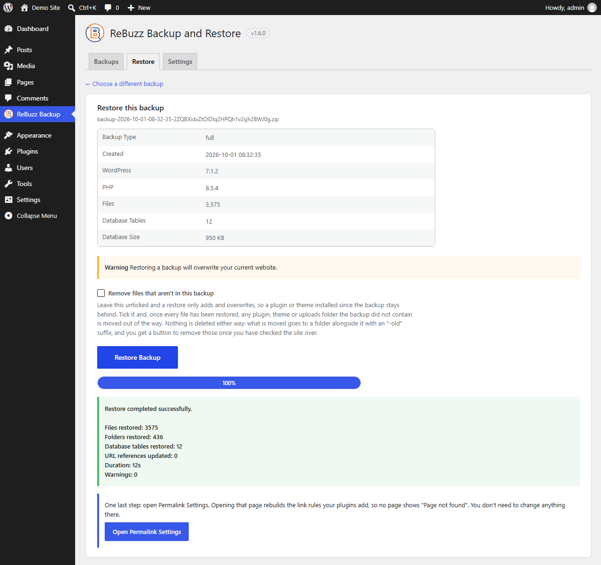
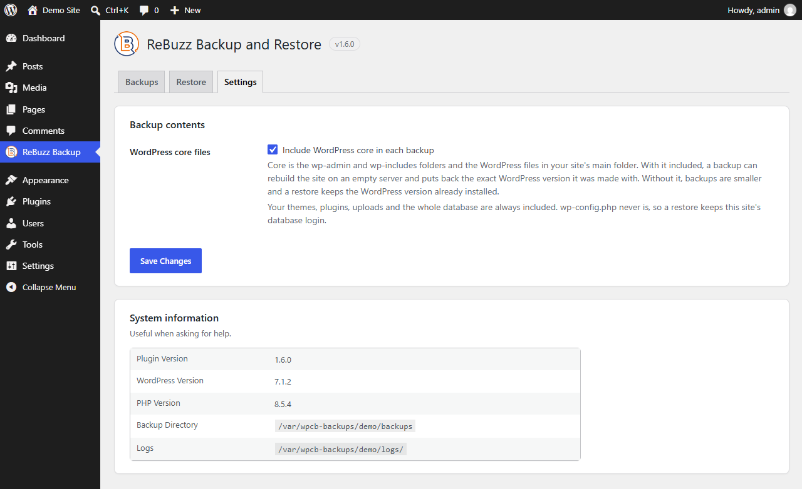

Back up today.
Sleep peacefully
every night.
ReBuzz Backup & Restore makes WordPress backups, restores, and migrations simple, secure, and reliable.
- One-click backup
- Cloud storage
- Easy restore
- Site migration
Your site changes every day. Your backup should keep up.
Without a backup routine
- Manual backups get forgotten.
- A failed backup is only noticed on the day you need it.
- Restoring a site eats a whole afternoon.
- Moving a site means juggling files and a database by hand.
- Old archives end up scattered across folders and laptops.
With ReBuzz
- Backups run on a schedule you set once.
- Every archive is checked before it counts as done.
- Restores follow the same few steps every time.
- Moving a site is just a backup and a restore.
- Your backups stay somewhere you control.
What it does
-
One-click backups
Files, database, media and settings, saved together in one archive.
-
Scheduled backups
Hourly, daily or weekly. Retention rules clear out old archives for you.
-
Full or partial restore
Put back the whole site, or only the database, the files or the uploads.
-
Site migration
Back up on one site and restore on another. URLs and file paths are updated as it goes.
-
Storage you choose
Keep archives on your own server, send copies to external storage you connect, or both.
-
Checked before it counts
Each archive is checked for completeness before it's marked as a good backup.
-
Email alerts
Admins hear about finished runs, and about the ones that fail.
-
Light on your server
Work happens in short bursts on your schedule, not constantly in the background.
A look inside
These are real screens from the plugin. ReBuzz adds one item to your WordPress menu, with three tabs: Backups, Restore and Settings.

One button, and you can watch it work
Create Backup copies every file and the whole database into a single ZIP. It runs in small steps with a progress bar and a time estimate, so you can see how far along it is. Keep the page open until it finishes.
The cards above it show when the last backup ran, how many you have stored and how much space they take, and whether the backup folder is private.

Every backup in one list
Download a copy, restore it or delete it from the same table. Downloads go through your admin screen, never by a public link.
Got an archive that's too big to upload? Copy the ZIP into the backup folder over FTP and it shows up in the list too, at any size.

Restore from a list or an upload
Pick one of your saved backups, or upload a ZIP made on this site or on another one running ReBuzz. That second option is how you move a site to a new host. An uploaded file is checked before anything is restored.
The upload form takes files up to 300 MB. For a bigger backup, copy the ZIP into the backup folder with FTP or your host's file manager and restore it from the list.

See what's inside before you confirm
Choosing a backup shows what it holds first: its type, when it was made, the WordPress and PHP versions, and how many files and database tables it contains. Nothing changes until you press Restore Backup, and the screen warns you that it overwrites the current site.
A restore only adds and overwrites unless you tick “Remove files that aren't in this backup”. Even then nothing is deleted: those files are moved aside to a folder with an “-old” suffix, and you get a button to clear them once you've checked the site. When it finishes, a summary lists what was restored.

Choose whether to include WordPress core
Include it and a backup can rebuild the site on an empty server, with the exact WordPress version it was made with. Leave it out and backups are smaller, and a restore keeps the WordPress version already installed.
Themes, plugins, uploads and the whole database are always included. wp-config.php never is, so a restore keeps this site's database login. The system information below is there for when you ask for help.
How it works
-
Install it and make your first backup
Add the plugin, open ReBuzz Backup from your WordPress menu and press Create Backup. There's nothing to configure first.
-
Put it on a schedule
Choose hourly, daily or weekly. Each backup is checked before it's marked as done, and you can have an email sent if a run fails.
-
Restore when something breaks
A bad update or a plugin conflict? Pick the last good backup and put the site back, or restore just the database, the files or the uploads.
Where your backups live
A backup is only useful if you can trust it. Here's what happens to yours.
-
On your own server by default
Archives are saved in a folder inside
wp-content/uploads, on the same server as your site. -
Not reachable from the web
ReBuzz only writes archives to a folder it has confirmed can't be opened by URL. Downloads go through your admin screen.
-
Your storage, your credentials
If you connect external storage, copies go to your account. ReBuzz doesn't hold your archives anywhere else.
-
Failed means failed
A backup that fails its check is marked as failed, and it isn't counted as a restore point.
One plugin. Three licence sizes.
Every plan includes the full feature set. The difference is how many sites you run and how much support you need.
Compare licences
Annual licences, priced in USD. Each plan includes one year of updates and support — renew to keep receiving them.
Questions people ask
A free WordPress plugin for backing up, restoring and migrating sites. It runs from your WordPress admin and handles files, database, media and configuration in one place. There's no separate service to sign into.
WordPress core files, themes, plugins, the uploads and media directory, and the database. You can run a full backup, or select specific parts, for example a database-only run on a tighter schedule.
Yes. Choose a backup, review what it contains, and restore the whole site or only the parts you select. Restores run from an archive that has passed verification, and you see what will be replaced before anything is written.
Yes. Back up the source site, move the package to the destination, and restore it there. Site URLs and file paths are rewritten during the restore, so a staging-to-production move follows the same steps as any other restore.
On your own server by default. You can also connect an external storage destination with your own credentials and send copies there. Retention settings control how many archives are kept and for how long.
Yes. Set a frequency and a time and ReBuzz runs on that schedule. Every run is verified and recorded in the dashboard, so you can confirm the last few nights actually happened.
ReBuzz is built to work in short scheduled bursts rather than running constantly in the background. Between runs it does very little. Schedule backups for a quiet hour and visitors should not notice them at all.
Yes. It's free to install on as many sites as you like, and the migration workflow is the one teams use to move client sites between environments. Every site behaves the same way, which is the point.
It is marked as failed rather than left in an unknown state. The dashboard shows the reason, the archive is not counted as a valid restore point, and if email notifications are on, an administrator is told the same day.
ReBuzz comes with documentation and access to support. Support channel details are published alongside the plugin documentation.